전자산업기사 (2002-03-10 기출문제)
1과목: 전자회로
1. 병렬 부궤환 회로의 특징 중 옳지 않은 것은?
- 이득의 안정도가 개선된다.
- 일그러짐의 효과가 개선된다.
- 이득이 감소된다.
- 입력 임피던스가 증가한다.
(정답률: 70%)

2. 증폭기에 부궤환을 걸었을 때 동일한 출력 레벨 조건에서 특성이 개선 되지 않는 것은?
- 안정도
- 잡음
- 주파수 특성
- 비직선 일그러짐
(정답률: 60%)
3. 다음 논리회로의 명칭은?
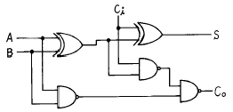
- 디코더
- 계수기
- 반가산기
- 전가산기
(정답률: 70%)
4. 전력증폭기의 직류 공급전압은 12[V], 400[mA]이고 능률은 80[%]일 때 부하에서의 출력전력은 몇 [W]인가?
- 0.77
- 1.44
- 2.88
- 3.84
(정답률: 59%)
5. P형 반도체를 만드는 불순물이 아닌 것은?
- Al(알루미늄)
- As(비소)
- Ga(가륨)
- In(인듐)
(정답률: 60%)
6. 2진수 1110의 2의 보수는?
- 1010
- 0001
- 1101
- 0010
(정답률: 80%)
7. 도면과 같은 회로에서 출력 전압 VO는?
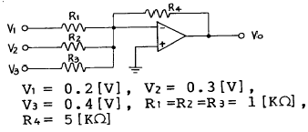
- 3.6V
- -3.6V
- 4.5V
- -4.5V
(정답률: 80%)
8. 그림과 같은 회로를 여파기로 사용하면 주파수 특성은?
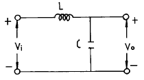
- 고역통과특성
- 저역통과특성
- 대역통과특성
- 대역저지특성
(정답률: 73%)
9. 주파수 대역폭을 넓히기 위한 방법으로 거리가 먼 것은?
- 동조 회로의 Q를 높인다.
- 복동조 회로를 사용한다.
- 궤환 보상을 한다.
- 스태거 증폭 방식을 사용한다.
(정답률: 61%)
10. 위상변조(PM)에 대한 설명 중 옳은 것은?
- 변조지수 mp는 신호의 진폭에 관계없다.
- 변조지수 mp는 신호의 주파수에는 관계없다.
- 최대 주파수 편이는 변조 주파수에 관계없다.
- 최대 주파수 편이는 변조 주파수에 반비례한다.
(정답률: 48%)
11. 다음 논리식에서 옳지 않은 것은?
- A + A = A
- A ㆍ A = A
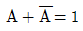
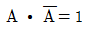
(정답률: 75%)
12. 회로에서 입력 단자와 출력 단자가 도통 되는 상태는?
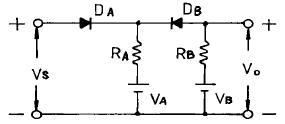
- VS＞VB, VA＜VB
- VS＜VA, VA＜VB
- VS＜VA, VS＞VB
- VS＞VA, VS＜VB
(정답률: 81%)
13. J-K 플립플롭을 사용하여 D 플립플롭을 만들려고 한다. 필요한 게이트(gate)는?
- AND
- NOT
- OR
- E-OR
(정답률: 68%)
14. 다음 회로에서 출력전류 Io는? (단, Ei = 1[V])
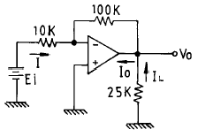
- 0.1 [㎃]
- 0.4 [㎃]
- 0.5 [㎃]
- 0.6 [㎃]
(정답률: 32%)
15. 다음중 미분회로는?
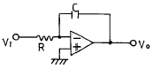
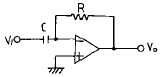
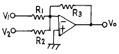
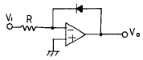
(정답률: 82%)
16. 반도체 재료의 특성인 것은?
- 다이아몬드형 결정 구조를 갖는다.
- 불순물을 주입하면 저항이 증가한다.
- 빛이나 열에 의하여 전자는 이동하지 않는다.
- 이온 결합을 하고 있다.
(정답률: 49%)
17. 포스터-실리(Foster-Seeley) 주파수 변별기와 비 검파기 (Ratio detector)의 특징을 비교 설명한 것이다. 옳지 않은 것은?
- 비검파기는 진폭제한 작용을 겸하고 있다.
- 회로 구성에서 다이오드의 접속 방향이 서로 다르다.
- Foster-Seeley 회로는 출력측 부하 저항의 한쪽이 접지되어 있고, 비 검파는 부하 저항의 중심점이 접지되어 있다.
- 비검파기의 감도가 더 양호하다.
(정답률: 53%)
18. 접합형 트랜지스터의 구조를 옳게 설명한 것은?
- 베이스 폭은 비교적 넓게하고,불순물을 적게 넣는다.
- 베이스 폭은 좁게 하고, 불순물을 적게 넣는다.
- 베이스, 이미터 및 컬렉터의 폭을 비슷하게 한다.
- 베이스, 이미터 및 컬렉터에 비슷한 정도의 불순물을 첨가한다.
(정답률: 66%)
19. 다음 발진기에서 다이오드의 역할은?
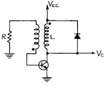
- 클램핑용
- 백스윙(backswing)의 제동
- 재생 스위칭 동작
- 온도 보상용
(정답률: 50%)
20. 논리식(불 대수식) A+AB를 간단히 한 결과는?
- A+B
- A
- B
- 1
(정답률: 54%)
2과목: 전기자기학 및 회로이론
21. 어떤 콘덴서가 누설이 없다면 이 콘덴서의 소모전력은 어떻게 되겠는가?
- 무한대가 된다.
- 인가전압의 제곱에 비례한다.
- 콘덴서 용량에 비례한다.
- 항상 0 이 된다.
(정답률: 63%)
22. 공진 회로에 있어서 선택도 Q를 표시하는 옳은 식은? (단, RLC 직렬 공진 회로임.)
- R/ωOL
- ωO/RL
- ωOL/R
- RL/ωO
(정답률: 65%)
23. 1[km]당의 인덕턴스 25[mH], 정전용량 0.0⑤[㎌]의 선로가 있다. 무손실선로라고 가정한 경우 위상속도는?
- 6.95 x 104[km/s]
- 6.95 x 10-4[km/s]
- 8.95 x 10-4[km/s]
- 8.95 x 104[km/s]
(정답률: 43%)
24.
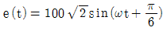
와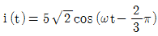
와의 위상차는?- 0°
- 40°
- 60°
- 150°
(정답률: 64%)
25. 완전 유전체내의 전자파에서 성립되는 식이 아닌 것은? (단, α는 감쇄정수, β는 위상정수, γ는 전파정수, λ는 파장, v는 속도, f는 주파수이다.)
- γ=α+jβ
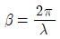
- v=fλ
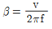
(정답률: 38%)
26. 평행판콘덴서의 면적이 S[m2], 양단의 극판 간격이 d[m]일 때 비유전률 εs인 유전체를 채우면 정전용량은 몇 F인가? (단, 진공 중의 유전률은 εo 이다.)
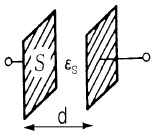
- εsS/4πεod
- 4πεoεs/Sd
- εoεsS/d
- εsS/εod
(정답률: 57%)
27. 실효값 220V인 정현파 교류 전압을 인가 했을 때 실효값 5A 전류가 흐르는 회로가 있을 때 피상 전력은?
- 1100VA
- 550VA
- 1100W
- 550W
(정답률: 66%)
28. 크기가 2×10-6 C 인 두 개의 같은 점전하가 진공 중에 떨어져 4×10-3 N의 힘이 작용할 때 이들 사이의 거리는 몇 m 인가?
- 1
- 2
- 3
- 4
(정답률: 29%)
29. 파고율(crest factor)을 나타낸 것은?
- 최대값÷ 평균값
- 실효값÷ 평균값
- 실효값÷ 최대값
- 최대값÷ 실효값
(정답률: 74%)
30. 도전률 σ, 투자율 μ 인 도체에 교류전류가 흐를 때의 표피효과에 대한 설명으로 옳은 것은?
- 도전률이 클수록 표피효과가 크다.
- 투자율이 클수록 표피효과가 적다.
- 주파수가 높을수록 표피효과가 적다.
- 재료의 유전률과 표피효과는 깊은 관계에 있다.
(정답률: 36%)
31. ABCD 파라미터에서 B에 대한 정의로서 옳은 것은?
- 개방 역방향 전압이득
- 단락 역방향 전류이득
- 단락 역방향 전달 임피던스
- 개방 순방향 전달 어드미턴스
(정답률: 73%)
32. 정전용량 5μF인 콘덴서를 200V로 충전하여 자기인덕턴스 20mH, 저항 0 인 코일을 통해 방전할 때 생기는 전기진동 주파수 f[Hz]와 코일에 축적되는 에너지 W는 몇 Ｊ 인가?
- f=500, W=0.1
- f=50, W=1
- f=500, W=1
- f=5000, W=0.1
(정답률: 49%)
33. 감자율이 0 인 것은?
- 가늘고 짧은 막대 자성체
- 굵고 짧은 막대 자성체
- 가늘고 긴 막대 자성체
- 환상 솔레노이드
(정답률: 79%)
34. 그림과 같이 도체 1을 도체 2로 포위하여 도체 2를 일정 전위로 유지하고, 도체 1과 도체 2의 외측에 도체 3 이 있을 때 용량계수 및 유도계수의 성질로 옳은 것은?
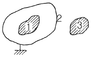
- q21 = -q11
- q31 = q11
- q13 = -q11
- q23 = q11
(정답률: 53%)
35. 비투자율이 μs이고 감자율이 N인 자성체를 외부 자계 H중에 놓았을 때 자성체의 자화의 세기는 몇 Wb/m2 인가?
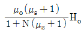
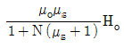
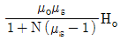
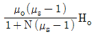
(정답률: 66%)
36. 30을 데시벨[dB]로 표시하면? (단, log103=0.477 )
- 25.4
- 29.5
- 30.1
- 35.3
(정답률: 74%)
37. 그림과 같은 이상 변압기(ideal transformer) M의 값은 몇 [H]인가? (단, L1=2[H], L2=8[H]이다.)
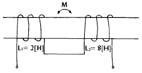
- 2
- 4
- 8
- 16
(정답률: 79%)
38. 축이 무한히 길고, 반지름이 a[m]인 원주내에 전하가 축대칭이며, 축방향으로 균일하게 분포되어 있을 경우, 반지름 r(＞a)[m]되는 동심 원통면상 외부의 일점 P의 전계의 세기는 몇 V/m 인가? (단, 원주의 단위 길이당의 전하를 λ[C/m]라 한다.)
- λ/ɛo
- λ/2πεo
- λ/πa
- λ/2πεor
(정답률: 57%)
39. f(t)=cosω t이다. 이의 라플라스 변환은?
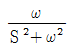
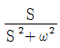
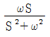
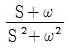
(정답률: 75%)
40. 저항 R과 L의 직렬 회로에서 전원 주파수 f가 변할 때 전류 궤적은?
- 1 상한내의 직선
- 원점을 지나는 원
- 원점을 지나는 반원
- 4 상한내의 직선
(정답률: 55%)
3과목: 전자계산기일반
41. 다음 흐름도를 표시하는 기호 중 라인프린터 출력을 의미하는 것은?
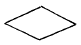
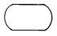
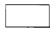
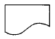
(정답률: 78%)
42. 다음의 흐름도 기호(flow-chart symbol)는?
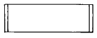
- 병렬 형태(parallel mode)
- 의사결정(decision)
- 준비(preparation)
- 정의된 처리(predefined process)
(정답률: 66%)
43. 계산기에서 연산 수행 후 연산 결과를 일시 저장하는 레지스터는?
- accumulator
- data register
- address register
- buffer register
(정답률: 67%)
44. 메모리로 부터 명령어를 꺼내오는 과정은?
- machine cycle
- instruction cycle
- fetch cycle
- execution cycle
(정답률: 67%)
45. 인터럽트의 원인 중 프로세서 외부에서 발생되는 것은?
- 정의되어 있지 않은 명령의 실행 중 일어나는 연산의 에러
- 기억 장치의 고장
- 제어 장치의 이상
- 입曺출력기기로 부터의 발생
(정답률: 79%)
46. 1024× 8비트 ROM의 경우 최소한 몇 개의 Address line이 필요한가?
- 8
- 9
- 10
- 11
(정답률: 75%)
47. 단항(unary) 연산이 아닌 것은?
- COMPLEMENT
- SHIFT
- ROTATE
- XOR
(정답률: 81%)
48. 어떤 인스트럭션이 수행되기 위하여 가장 먼저 행해야하는 마이크로 오퍼레이션은?
- IR → MAR
- PC → MAR
- PC → MBR
- PC+1 → PC
(정답률: 83%)
49. 인터럽트(Interrupt)우선 순위 부여 방식으로 우선순위에 따라 장치들을 직렬로 연결하며, 우선순위의 변경은 어렵고, 비경제적이지만 인터럽트 반응속도가 빠른 방식은?
- 데이지 체인(Daisy Chain)
- 폴링(Polling)
- 장치 코드 버스(Device Code Bus)
- 플래그(Flag)
(정답률: 64%)
50. 기억장치에 기억된 명령(instruction)이 실행되는 순서대로 중앙처리장치에서 실행될 수 있도록 그 주소를 지정해 주는 레지스터는?
- 프로그램 카운터(program counter)
- 어큐뮬레이터(accumulator)
- 명령 레지스터(instruction register)
- 스택 포인터(stack pointer)
(정답률: 62%)
51. 프로그램의 서브루틴 호출과 복귀를 처리할 때에 이용되는 것은?
- 스택
- 큐
- ROM
- 프로그램 카운터
(정답률: 75%)
52. 특정의 비트 또는 특정의 문자를 삭제하기 위해 가장 필요한 연산은?
- AND 연산
- OR 연산
- MOVE 연산
- Complement 연산
(정답률: 69%)
53. 서브 루틴에서 메인 프로그램으로 돌아 갈 때 복귀 주소(return address)가 저장된 위치를 기억하고 있는 레지스터는?
- status register
- instruction register
- stack pointer
- index register
(정답률: 56%)
54. 어셈블리 언어로 프로그램을 작성할 때 절대번지 대신에 간단한 기호 명칭을 사용할 수 있는데 이러한 번지를 무엇이라 하는가?
- 자기 번지(self address)
- 기호 번지(symbolic address)
- 상대 번지(relative address)
- 기호 상대 번지(symbolic relative address)
(정답률: 66%)
55. 레지스터내의 비트 중 일부분을 보수화시킬 때 사용될 수 있는 마이크로 동작은?
- 마스크(mask)
- 배타적 OR
- OR
- 논리
(정답률: 72%)
56. 번지 레지스터와 번지 버스가 12 비트인 경우 최대로 지적할 수 있는 기억 장치의 용량은?
- 12 킬로
- 12 메가
- 4 킬로
- 8 킬로
(정답률: 63%)
57. 자료의 흐름을 중심으로 하여 시스템 전체의 작업처리 내용을 종합적이고, 전체적인 상태로 도시한 순서도는?
- 시스템 순서도
- 프로그램 순서도
- 개략 순서도
- 상세 순서도
(정답률: 80%)
58. 데이터 통신용으로 널리 사용되고 마이크로 컴퓨터에서 많이 채택되고 있는 코드는?
- ASCII 코드
- BCD 코드
- EBCDIC 코드
- Gray 코드
(정답률: 61%)
59. 양방향 전송을 동시에 할 수 있는 시스템은?
- Simplex System
- Half-Duplex System
- Modem System
- Duplex System
(정답률: 70%)
60. 어떤 정보나 데이터를 읽어 내거나 기록하는 동작에서 기억장치가 명령을 수행하는데 소요되는 시간을 무엇이라 하는가?
- access time
- seek time
- idle time
- processing time
(정답률: 58%)
4과목: 전자계측
61. 열전형 계기의 표피오차 방지책은?
- 고주파를 사용
- 초크 코일 사용
- 미소 전류 사용
- 가는 열선 사용
(정답률: 68%)
62. 오실로스코프의 CRT 구조에서 초점 조정기는?
- 제어 그리드
- 집속 양극
- 수차 조정기
- 수평 위치 조정기
(정답률: 56%)
63. 측정자의 눈금 오독 혹은 실수에 의해 발생하는 오차는?
- 우연 오차
- 과실 오차
- 이론 오차
- 계통 오차
(정답률: 81%)
64. 계수형 주파수계에서 Reset 회로의 역할은?
- Gate 시간을 조정한다.
- 입력신호 레벨을 조정한다.
- 계수하기 전에 계수부를 0으로 복귀시킨다.
- 각부의 오동작을 제거한다.
(정답률: 80%)
65. 주어진 전기적 신호의 주파수 스펙트럼에 걸친 에너지 분포를 CRT에 나타내는 기기는?
- Oscilloscope
- Spectrum Analyzer
- Frequency counter
- samplingscope
(정답률: 63%)
66. 셰링 브리지로 측정 할 수 있는 것은?
- 유전체 손실각
- 유도 리액턴스
- 동손
- 철심의 와전류
(정답률: 77%)
67. 디지털 주파수 계의 구성과 관계가 있는 것은?
- 변조기
- 검파기
- CRT
- 게이트 회로
(정답률: 64%)
68. 원격 측정의 전송 방식 중 펄스 시한법의 설명으로 옳지 않은 것은?
- 전송 선로의 상태가 다소 변하면 오차가 생긴다.
- 송량측에서 피측정량에 대응하여 신호 전류의 단속 시간을 바꾸는 방식이다.
- 펄스의 크기에는 관계가 없다.
- 신호의 단속 시간을 바르게 전송해야 한다.
(정답률: 25%)
69. 다음 그림에서 V = 100[V], A = 5[A], W = 400[W] 일 때 부하의 역률은?
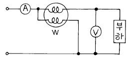
- 0.8
- 0.85
- 0.9
- 1.0
(정답률: 74%)
70. 최대눈금 250[V]인 0.5급 전압계로 전압을 측정하였더니 지시가 100[V]였다고 한다. 상대 오차는?
- 1[%]
- 1.25[%]
- 2[%]
- 2.25[%]
(정답률: 80%)
71. 불규칙한 비주기성 파형 또는 한 번 밖에 일어나지 않는 현상의 파형 측정에 적당한 계기는?
- 주파수 카운터
- 싱크로스코프
- VTVM
- 엡스타인 장치
(정답률: 75%)
72. 디지털 계측기의 장점을 설명한 것 중 옳지 않은 것은?
- 일반적으로 연속량을 측정할 수 있다.
- 측정이 매우 쉽고, 신속히 이루어진다.
- 측정값을 읽을 때 개인적 오차가 발생하지 않는다.
- 정도가 높은 측정이 가능하다.
(정답률: 70%)
73. 무부하 시 전압이 220[V]이고, 정격 부하 시 전압이 200[V]일 때 전압 변동률은?
- 5[%]
- 10[%]
- 15[%]
- 20[%]
(정답률: 83%)
74. 스트로보스코프(stroboscope)로서 측정할 수 있는 것은?
- 전류
- 조도
- 전압
- 회전수
(정답률: 79%)
75. 오실로스코프의 동기 방법이 아닌 것은?
- 전원 동기
- 내부 동기
- 외부 동기
- 신호 동기
(정답률: 73%)
76. 계수형 주파수계의 확도에 영향을 주는 것은?
- 클럭 발진기
- 게이트 회로
- 지시관의 특성
- 전원 전압의 변동
(정답률: 56%)
77. 지시 계기의 3 요소에 속하는 제동장치의 종류가 아닌 것은?
- 액체 제동장치
- 스프링 제동장치
- 공기 제동장치
- 와전류 제동장치
(정답률: 62%)
78. 저주파 발진기에 흔히 쓰이는 빈 브리지의 장점이 아닌 것은?
- 입력 특성이 좋다.
- 일그러짐이 적다.
- 발진 주파수가 안정하다.
- 출력 특성이 좋다.
(정답률: 57%)
79. 그림과 같은 회로에서 전력계 및 직류전압계는 각 각 100[W], 100[V]를 지시 하였다. 부하 전력은? (단, 전력계의 전류 코일 저항은 무시하며, 전압계의 저항은 1000[Ω ]이다.)
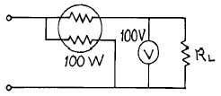
- 40[W]
- 60[W]
- 80[W]
- 90[W]
(정답률: 52%)
80. 감도가 높고, 정밀한 측정을 요구하는 경우 사용하는 측정법 중 가장 적합한 것은?
- 영위법
- 편위법
- 반경법
- 직편법
(정답률: 73%)